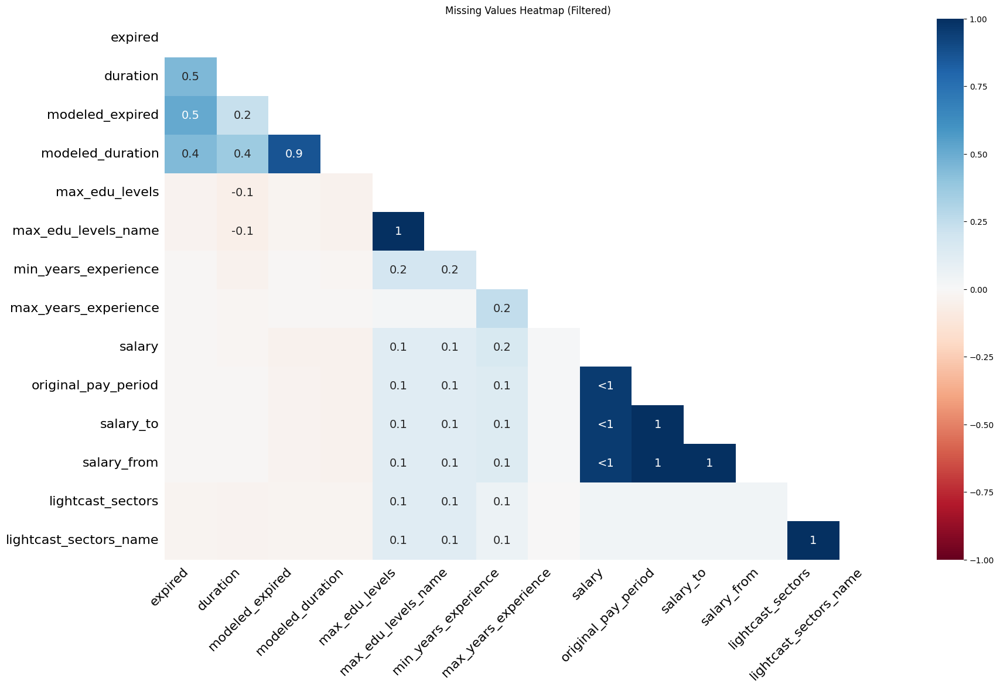

Code
# Load necessary libraries
import pandas as pd
import numpy as np
import matplotlib.pyplot as plt
import seaborn as snsComprehensive Data Cleaning & Exploratory Analysis of Job Market Trends
Ling Lu
Boston University
Luoyan Zhang
Boston University
Yinuo Wang
Boston University
This section presents a detailed data analysis of job market trends in 2024, focusing on AI-driven changes, salary disparities, and employment trends across different regions and industries.
<class 'pandas.core.frame.DataFrame'>
RangeIndex: 72498 entries, 0 to 72497
Columns: 118 entries, id to naics_2022_6_name
dtypes: float64(38), object(80)
memory usage: 65.3+ MB| duplicates | duration | modeled_duration | company | min_edu_levels | max_edu_levels | employment_type | min_years_experience | max_years_experience | salary | ... | lot_occupation_group | lot_v6_specialized_occupation | lot_v6_occupation | lot_v6_occupation_group | lot_v6_career_area | naics_2022_2 | naics_2022_3 | naics_2022_4 | naics_2022_5 | naics_2022_6 | |
|---|---|---|---|---|---|---|---|---|---|---|---|---|---|---|---|---|---|---|---|---|---|
| count | 72476.000000 | 45182.000000 | 53208.000000 | 7.245400e+04 | 72454.000000 | 16315.000000 | 72454.000000 | 49352.000000 | 8430.000000 | 30808.000000 | ... | 72454.000000 | 7.245400e+04 | 72454.000000 | 72454.000000 | 72454.000000 | 72454.000000 | 72454.000000 | 72454.000000 | 72454.000000 | 72454.000000 |
| mean | 1.081627 | 22.322695 | 19.737615 | 3.702704e+07 | 31.482527 | 2.833834 | 1.058768 | 5.486444 | 3.773903 | 117953.755031 | ... | 2239.204475 | 2.239318e+07 | 223931.694096 | 2239.204475 | 22.281158 | 58.352555 | 587.864590 | 5883.121995 | 58834.317125 | 588345.683937 |
| std | 2.807512 | 14.359085 | 12.963769 | 3.015089e+07 | 44.747433 | 0.584028 | 0.286997 | 3.322241 | 2.576739 | 45133.878359 | ... | 285.424309 | 2.854275e+06 | 28542.747473 | 285.424309 | 2.854360 | 18.626415 | 186.259064 | 1864.093904 | 18642.971892 | 186431.744508 |
| min | 0.000000 | 0.000000 | 0.000000 | 0.000000e+00 | 0.000000 | 1.000000 | 1.000000 | 0.000000 | 0.000000 | 15860.000000 | ... | 1111.000000 | 1.111101e+07 | 111110.000000 | 1111.000000 | 11.000000 | 11.000000 | 111.000000 | 1111.000000 | 11115.000000 | 111150.000000 |
| 25% | 0.000000 | 11.000000 | 10.000000 | 6.505993e+06 | 2.000000 | 3.000000 | 1.000000 | 3.000000 | 2.000000 | 84928.500000 | ... | 2310.000000 | 2.310101e+07 | 231010.000000 | 2310.000000 | 23.000000 | 52.000000 | 522.000000 | 5223.000000 | 52232.000000 | 522320.000000 |
| 50% | 0.000000 | 18.000000 | 16.000000 | 3.761516e+07 | 2.000000 | 3.000000 | 1.000000 | 5.000000 | 3.000000 | 116300.000000 | ... | 2311.000000 | 2.311131e+07 | 231113.000000 | 2311.000000 | 23.000000 | 54.000000 | 541.000000 | 5415.000000 | 54151.000000 | 541519.000000 |
| 75% | 1.000000 | 32.000000 | 28.000000 | 4.330689e+07 | 99.000000 | 3.000000 | 1.000000 | 8.000000 | 5.000000 | 145600.000000 | ... | 2311.000000 | 2.311131e+07 | 231113.000000 | 2311.000000 | 23.000000 | 56.000000 | 561.000000 | 5614.000000 | 56149.000000 | 561499.000000 |
| max | 100.000000 | 59.000000 | 59.000000 | 1.082365e+08 | 99.000000 | 4.000000 | 3.000000 | 15.000000 | 14.000000 | 500000.000000 | ... | 2712.000000 | 2.712111e+07 | 271211.000000 | 2712.000000 | 27.000000 | 99.000000 | 999.000000 | 9999.000000 | 99999.000000 | 999999.000000 |
8 rows × 38 columns
Which columns should be dropped, and why?
The columns selected for removal are considered redundant because they either provide duplicate information, are unnecessary for analysis, or have more detailed equivalents in the dataset. For example, "ID" serves as a unique identifier but is often not needed for analysis, while "URL" and "ACTIVE_URLS" contain job posting links that are useful externally but not critical for data processing. Similarly, "LAST_UPDATED_TIMESTAMP" is dropped because "LAST_UPDATED_DATE" already provides update information in a more readable format. The "DUPLICATES" column, which likely flags repeated entries, is also removed since duplicates can be handled separately.
Additionally, industry and occupational classification columns like "NAICS2" to "NAICS6" and "SOC_2", "SOC_3", "SOC_5" are removed because these represent different levels of classification, and more relevant or updated versions (e.g., "NAICS_2022_2" to "NAICS_2022_6") are already present in the dataset. Removing these redundant columns helps streamline the dataset, making it more efficient to analyze without losing valuable information.
Columns after dropping: Index(['last_updated_date', 'posted', 'expired', 'duration', 'title_raw',
'body', 'modeled_expired', 'modeled_duration', 'company',
'company_name',
...
'naics_2022_2', 'naics_2022_2_name', 'naics_2022_3',
'naics_2022_3_name', 'naics_2022_4', 'naics_2022_4_name',
'naics_2022_5', 'naics_2022_5_name', 'naics_2022_6',
'naics_2022_6_name'],
dtype='object', length=107)| last_updated_date | posted | expired | duration | title_raw | body | modeled_expired | modeled_duration | company | company_name | ... | naics_2022_2 | naics_2022_2_name | naics_2022_3 | naics_2022_3_name | naics_2022_4 | naics_2022_4_name | naics_2022_5 | naics_2022_5_name | naics_2022_6 | naics_2022_6_name | |
|---|---|---|---|---|---|---|---|---|---|---|---|---|---|---|---|---|---|---|---|---|---|
| 0 | 9/6/2024 | 6/2/2024 | 6/8/2024 | 6.0 | Enterprise Analyst (II-III) | 31-May-2024\n\nEnterprise Analyst (II-III)\n\n... | False | 6.0 | 894731.0 | Murphy USA | ... | 44.0 | Retail Trade | 441.0 | Motor Vehicle and Parts Dealers | 4413.0 | Automotive Parts, Accessories, and Tire Retailers | 44133.0 | Automotive Parts and Accessories Retailers | 441330.0 | Automotive Parts and Accessories Retailers |
| 1 | 8/2/2024 | 6/2/2024 | 8/1/2024 | NaN | Oracle Consultant - Reports (3592) | Oracle Consultant - Reports (3592)\n\nat SMX i... | False | NaN | 133098.0 | Smx Corporation Limited | ... | 56.0 | Administrative and Support and Waste Managemen... | 561.0 | Administrative and Support Services | 5613.0 | Employment Services | 56132.0 | Temporary Help Services | 561320.0 | Temporary Help Services |
| 2 | 9/6/2024 | 6/2/2024 | 7/7/2024 | 35.0 | Data Analyst | Taking care of people is at the heart of every... | False | 8.0 | 39063746.0 | Sedgwick | ... | 52.0 | Finance and Insurance | 524.0 | Insurance Carriers and Related Activities | 5242.0 | Agencies, Brokerages, and Other Insurance Rela... | 52429.0 | Other Insurance Related Activities | 524291.0 | Claims Adjusting |
| 3 | 9/6/2024 | 6/2/2024 | 7/20/2024 | 48.0 | Sr. Lead Data Mgmt. Analyst - SAS Product Owner | About this role:\n\nWells Fargo is looking for... | False | 10.0 | 37615159.0 | Wells Fargo | ... | 52.0 | Finance and Insurance | 522.0 | Credit Intermediation and Related Activities | 5221.0 | Depository Credit Intermediation | 52211.0 | Commercial Banking | 522110.0 | Commercial Banking |
| 4 | 6/19/2024 | 6/2/2024 | 6/17/2024 | 15.0 | Comisiones de $1000 - $3000 por semana... Comi... | Comisiones de $1000 - $3000 por semana... Comi... | False | 15.0 | 0.0 | Unclassified | ... | 99.0 | Unclassified Industry | 999.0 | Unclassified Industry | 9999.0 | Unclassified Industry | 99999.0 | Unclassified Industry | 999999.0 | Unclassified Industry |
5 rows × 107 columns
How should missing values be handled?
Missing values should be handled strategically based on their impact on analysis. First, visualizing missing data with a heatmap helps identify patterns and assess severity. Columns with more than 50% missing values are dropped to avoid unreliable or incomplete data. For numerical fields like "Salary", filling missing values with the median ensures the data remains representative without being skewed by outliers. Categorical fields like "Industry" are filled with "Unknown" to maintain completeness while preserving interpretability. This approach balances data retention and accuracy, ensuring meaningful analysis without introducing bias.
import missingno as msno
import matplotlib.pyplot as plt
# Visualize missing data
# Identify columns with >10% missing values
missing_threshold = 0.1
missing_cols = df.columns[df.isnull().mean() > missing_threshold]
# Filter DataFrame
df_missing = df[missing_cols]
# Generate heatmap
plt.figure(figsize=(12, 6))
msno.heatmap(df_missing)
plt.title("Missing Values Heatmap (Filtered)")
plt.show()
# Drop columns with >50% missing values
df.dropna(thresh=len(df) * 0.5, axis=1, inplace=True)
# Fill missing values
df_original = pd.read_csv("lightcast_job_postings.csv")
df["salary"] = df_original["salary"]
salary_col = "salary" if "salary" in df.columns else None
if salary_col:
df[salary_col].fillna(df[salary_col].median(), inplace=True)
else:
print("Warning: No salary-related column found!")
df["naics6_name"].fillna("Unknown", inplace=True)<Figure size 1152x576 with 0 Axes>
To ensure each job is counted only once, we remove duplicates based on job title, company, location, and posting date.
print("Existing columns in DataFrame:", df.columns.tolist()) # Display actual column names
# Convert column names to lowercase for case-insensitive matching
df.columns = df.columns.str.lower()
columns_to_check = ["title", "company", "location", "posted"]
existing_columns = [col for col in columns_to_check if col in df.columns]
if not existing_columns:
raise ValueError("None of the specified columns exist in the DataFrame. Check column names!")
print("Before removing duplicates:")
print(df[existing_columns].head())
df = df.drop_duplicates(subset=existing_columns, keep="first")
print("\nAfter removing duplicates:")
print(df[existing_columns].head())
print("\nDuplicates removed based on:", existing_columns)Existing columns in DataFrame: ['last_updated_date', 'posted', 'expired', 'duration', 'title_raw', 'body', 'modeled_expired', 'modeled_duration', 'company', 'company_name', 'company_raw', 'company_is_staffing', 'education_levels', 'education_levels_name', 'min_edu_levels', 'min_edu_levels_name', 'employment_type', 'employment_type_name', 'min_years_experience', 'is_internship', 'remote_type', 'remote_type_name', 'location', 'city', 'city_name', 'county', 'county_name', 'msa', 'msa_name', 'state', 'state_name', 'county_outgoing', 'county_name_outgoing', 'county_incoming', 'county_name_incoming', 'msa_outgoing', 'msa_name_outgoing', 'msa_incoming', 'msa_name_incoming', 'naics2_name', 'naics3_name', 'naics4_name', 'naics5_name', 'naics6_name', 'title', 'title_name', 'title_clean', 'certifications', 'certifications_name', 'onet', 'onet_name', 'onet_2019', 'onet_2019_name', 'cip6', 'cip6_name', 'cip4', 'cip4_name', 'cip2', 'cip2_name', 'soc_2021_2', 'soc_2021_2_name', 'soc_2021_3', 'soc_2021_3_name', 'soc_2021_4', 'soc_2021_4_name', 'soc_2021_5', 'soc_2021_5_name', 'lot_career_area', 'lot_career_area_name', 'lot_occupation', 'lot_occupation_name', 'lot_specialized_occupation', 'lot_specialized_occupation_name', 'lot_occupation_group', 'lot_occupation_group_name', 'lot_v6_specialized_occupation', 'lot_v6_specialized_occupation_name', 'lot_v6_occupation', 'lot_v6_occupation_name', 'lot_v6_occupation_group', 'lot_v6_occupation_group_name', 'lot_v6_career_area', 'lot_v6_career_area_name', 'soc_2_name', 'soc_3_name', 'soc_4', 'soc_4_name', 'soc_5_name', 'naics_2022_2', 'naics_2022_2_name', 'naics_2022_3', 'naics_2022_3_name', 'naics_2022_4', 'naics_2022_4_name', 'naics_2022_5', 'naics_2022_5_name', 'naics_2022_6', 'naics_2022_6_name', 'salary']
Before removing duplicates:
title company \
0 ET29C073C03D1F86B4 894731.0
1 ET21DDA63780A7DC09 133098.0
2 ET3037E0C947A02404 39063746.0
3 ET2114E0404BA30075 37615159.0
4 ET0000000000000000 0.0
location posted
0 {\n "lat": 33.20763,\n "lon": -92.6662674\n} 6/2/2024
1 {\n "lat": 44.3106241,\n "lon": -69.7794897\n} 6/2/2024
2 {\n "lat": 32.7766642,\n "lon": -96.7969879\n} 6/2/2024
3 {\n "lat": 33.4483771,\n "lon": -112.0740373\n} 6/2/2024
4 {\n "lat": 37.6392595,\n "lon": -120.9970014\n} 6/2/2024
After removing duplicates:
title company \
0 ET29C073C03D1F86B4 894731.0
1 ET21DDA63780A7DC09 133098.0
2 ET3037E0C947A02404 39063746.0
3 ET2114E0404BA30075 37615159.0
4 ET0000000000000000 0.0
location posted
0 {\n "lat": 33.20763,\n "lon": -92.6662674\n} 6/2/2024
1 {\n "lat": 44.3106241,\n "lon": -69.7794897\n} 6/2/2024
2 {\n "lat": 32.7766642,\n "lon": -96.7969879\n} 6/2/2024
3 {\n "lat": 33.4483771,\n "lon": -112.0740373\n} 6/2/2024
4 {\n "lat": 37.6392595,\n "lon": -120.9970014\n} 6/2/2024
Duplicates removed based on: ['title', 'company', 'location', 'posted']original_cols = set(df_original.columns) processed_cols = set(df.columns) missing_cols = original_cols - processed_cols print(“Missing columns:”, missing_cols)
EDA helps uncover patterns in job postings and salaries across industries. These insights assist job seekers in making informed career decisions.
Why this visualization?
The bar chart displays the distribution of job postings across different industries, helping identify which sectors have the most opportunities. This allows for a quick comparison of industry demand and can highlight trends in job availability.
import plotly.express as px
import plotly.io as pio
# Set Plotly renderer for Quarto or Jupyter
pio.renderers.default = "iframe"
# Get top 20 industries by job postings
top_n = 20
industry_counts = df["naics6_name"].value_counts().nlargest(top_n).reset_index()
industry_counts.columns = ["Industry", "Count"]
# Create horizontal bar chart with a taller y-axis
fig = px.bar(
industry_counts,
x="Industry",
y="Count",
title=f"Top {top_n} Job Postings by Industry (NAICS6)",
labels={"Industry": "Industry", "Count": "Number of Job Postings"}
)
# Extend y-axis and increase figure height
fig.update_layout(
xaxis_title="Industry",
yaxis_title="Number of Job Postings",
yaxis=dict(range=[0, industry_counts["Count"].max() * 1.2]), # Extend y-axis
height=1000 # Increase figure height for better spacing
)
fig.show()Why this visualization?
The box plot visualizes salary distribution by industry, showcasing variations in compensation and identifying potential outliers. This helps compare earnings across different sectors and assess salary disparities within the job market.
import plotly.express as px
# Get top 20 industries by job postings
top_n = 20
top_industries = df["naics6_name"].value_counts().nlargest(top_n).index
# Filter dataset for top industries
df_filtered = df[df["naics6_name"].isin(top_industries)]
# Create the box plot with an extended y-axis
fig = px.box(
df_filtered,
x="naics6_name",
y="salary",
title=f"Salary Distribution in Top {top_n} Industries",
labels={"naics6_name": "Industry", "salary": "Salary ($)"},
points="all" # Show all outliers
)
# Extend the y-axis
fig.update_layout(
xaxis_title="Industry",
yaxis_title="Salary ($)",
yaxis=dict(range=[0, df_filtered["salary"].max() * 1.2]), # Extend y-axis 20% above max salary
height=1000 # Increase figure height for better visibility
)
fig.show()Why this visualization?
The pie chart illustrates the proportion of remote versus on-site jobs, providing insights into workplace flexibility. It helps understand the prevalence of remote work and how job location preferences are shifting in the job market.
This analysis provides insights into the evolving job market in 2024, highlighting AI’s impact, salary trends, and employment disparities. The findings indicate how different disciplines benefit from AI’s rise, with certain fields seeing more substantial salary growth. Further analysis will explore regional job differences and future career recommendations.
---
title: "Data Analysis"
subtitle: "Comprehensive Data Cleaning & Exploratory Analysis of Job Market Trends"
execute:
echo: true
warning: false
jupyter: python3
author:
- name: Ling Lu
affiliations:
- id: U15738240
name: Boston University
city: Boston
state: MA
- name: Luoyan Zhang
affiliations:
- id: U00607539
name: Boston University
city: Boston
state: MA
- name: Yinuo Wang
affiliations:
- id: U78839500
name: Boston University
city: Boston
state: MA
bibliography: references.bib
csl: csl/econometrica.csl
format:
html:
code-fold: true
code-tools: true
toc: true
number-sections: true
df-print: paged
---
# Introduction
This section presents a detailed data analysis of job market trends in 2024, focusing on AI-driven changes, salary disparities, and employment trends across different regions and industries.
## Data Import and Cleaning
```{python}
# Load necessary libraries
import pandas as pd
import numpy as np
import matplotlib.pyplot as plt
import seaborn as sns
```
# Load dataset
```{python}
df = pd.read_csv("lightcast_job_postings.csv")
# Display dataset summary
df.info()
df.describe()
```
# Data Cleaning & Preprocessing
## Drop Unnecessary Columns
**Which columns should be dropped, and why?**
The columns selected for removal are considered redundant because they either provide duplicate information, are unnecessary for analysis, or have more detailed equivalents in the dataset. For example, `"ID"` serves as a unique identifier but is often not needed for analysis, while `"URL"` and `"ACTIVE_URLS"` contain job posting links that are useful externally but not critical for data processing. Similarly, `"LAST_UPDATED_TIMESTAMP"` is dropped because `"LAST_UPDATED_DATE"` already provides update information in a more readable format. The `"DUPLICATES"` column, which likely flags repeated entries, is also removed since duplicates can be handled separately.
Additionally, industry and occupational classification columns like `"NAICS2"` to `"NAICS6"` and `"SOC_2"`, `"SOC_3"`, `"SOC_5"` are removed because these represent different levels of classification, and more relevant or updated versions (e.g., `"NAICS_2022_2"` to `"NAICS_2022_6"`) are already present in the dataset. Removing these redundant columns helps streamline the dataset, making it more efficient to analyze without losing valuable information.
```{python}
columns_to_drop = [
"id", "duplicates", "last_updated_timestamp",
"naics2", "naics3", "naics4", "naics5", "naics6",
"soc_2", "soc_3", "soc_5"
]
df = df.drop(columns=[col for col in columns_to_drop if col in df.columns], inplace=False)
print("Columns after dropping:", df.columns)
df.head()
```
## Handle Missing Values
**How should missing values be handled?**
Missing values should be handled strategically based on their impact on analysis. First, visualizing missing data with a heatmap helps identify patterns and assess severity. Columns with more than 50% missing values are dropped to avoid unreliable or incomplete data. For numerical fields like `"Salary"`, filling missing values with the median ensures the data remains representative without being skewed by outliers. Categorical fields like `"Industry"` are filled with `"Unknown"` to maintain completeness while preserving interpretability. This approach balances data retention and accuracy, ensuring meaningful analysis without introducing bias.
```{python}
import missingno as msno
import matplotlib.pyplot as plt
# Visualize missing data
# Identify columns with >10% missing values
missing_threshold = 0.1
missing_cols = df.columns[df.isnull().mean() > missing_threshold]
# Filter DataFrame
df_missing = df[missing_cols]
# Generate heatmap
plt.figure(figsize=(12, 6))
msno.heatmap(df_missing)
plt.title("Missing Values Heatmap (Filtered)")
plt.show()
# Drop columns with >50% missing values
df.dropna(thresh=len(df) * 0.5, axis=1, inplace=True)
# Fill missing values
df_original = pd.read_csv("lightcast_job_postings.csv")
df["salary"] = df_original["salary"]
salary_col = "salary" if "salary" in df.columns else None
if salary_col:
df[salary_col].fillna(df[salary_col].median(), inplace=True)
else:
print("Warning: No salary-related column found!")
df["naics6_name"].fillna("Unknown", inplace=True)
```
## Remove Duplicates
To ensure each job is counted only once, we remove duplicates based on job title, company, location, and posting date.
```{python}
print("Existing columns in DataFrame:", df.columns.tolist()) # Display actual column names
# Convert column names to lowercase for case-insensitive matching
df.columns = df.columns.str.lower()
columns_to_check = ["title", "company", "location", "posted"]
existing_columns = [col for col in columns_to_check if col in df.columns]
if not existing_columns:
raise ValueError("None of the specified columns exist in the DataFrame. Check column names!")
print("Before removing duplicates:")
print(df[existing_columns].head())
df = df.drop_duplicates(subset=existing_columns, keep="first")
print("\nAfter removing duplicates:")
print(df[existing_columns].head())
print("\nDuplicates removed based on:", existing_columns)
```
original_cols = set(df_original.columns)
processed_cols = set(df.columns)
missing_cols = original_cols - processed_cols
print("Missing columns:", missing_cols)
# Exploratory Data Analysis (EDA)
EDA helps uncover patterns in job postings and salaries across industries. These insights assist job seekers in making informed career decisions.
## Job Postings by Industry
**Why this visualization?**
The bar chart displays the distribution of job postings across different industries, helping identify which sectors have the most opportunities. This allows for a quick comparison of industry demand and can highlight trends in job availability.
```{python}
import plotly.express as px
import plotly.io as pio
# Set Plotly renderer for Quarto or Jupyter
pio.renderers.default = "iframe"
# Get top 20 industries by job postings
top_n = 20
industry_counts = df["naics6_name"].value_counts().nlargest(top_n).reset_index()
industry_counts.columns = ["Industry", "Count"]
# Create horizontal bar chart with a taller y-axis
fig = px.bar(
industry_counts,
x="Industry",
y="Count",
title=f"Top {top_n} Job Postings by Industry (NAICS6)",
labels={"Industry": "Industry", "Count": "Number of Job Postings"}
)
# Extend y-axis and increase figure height
fig.update_layout(
xaxis_title="Industry",
yaxis_title="Number of Job Postings",
yaxis=dict(range=[0, industry_counts["Count"].max() * 1.2]), # Extend y-axis
height=1000 # Increase figure height for better spacing
)
fig.show()
```
## Salary Distribution by Industry
**Why this visualization?**
The box plot visualizes salary distribution by industry, showcasing variations in compensation and identifying potential outliers. This helps compare earnings across different sectors and assess salary disparities within the job market.
```{python}
import plotly.express as px
# Get top 20 industries by job postings
top_n = 20
top_industries = df["naics6_name"].value_counts().nlargest(top_n).index
# Filter dataset for top industries
df_filtered = df[df["naics6_name"].isin(top_industries)]
# Create the box plot with an extended y-axis
fig = px.box(
df_filtered,
x="naics6_name",
y="salary",
title=f"Salary Distribution in Top {top_n} Industries",
labels={"naics6_name": "Industry", "salary": "Salary ($)"},
points="all" # Show all outliers
)
# Extend the y-axis
fig.update_layout(
xaxis_title="Industry",
yaxis_title="Salary ($)",
yaxis=dict(range=[0, df_filtered["salary"].max() * 1.2]), # Extend y-axis 20% above max salary
height=1000 # Increase figure height for better visibility
)
fig.show()
```
## Remote vs. On-Site Jobs
**Why this visualization?**
The pie chart illustrates the proportion of remote versus on-site jobs, providing insights into workplace flexibility. It helps understand the prevalence of remote work and how job location preferences are shifting in the job market.
```{python}
fig = px.pie(df, names="remote_type_name", title="Remote vs. On-Site Jobs")
fig.show()
```
## Conclusion
This analysis provides insights into the evolving job market in 2024, highlighting AI's impact, salary trends, and employment disparities. The findings indicate how different disciplines benefit from AI's rise, with certain fields seeing more substantial salary growth. Further analysis will explore regional job differences and future career recommendations.